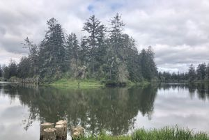

Along the Skyline Trail Loop near Sluiskin falls we helped restore this subalpine region. Subalpine regions are defined by having groupings of trees, little to no canopy cover, and meadows. Native Americans have been traced back to subalpine areas like these more than 8,000 years ago. We worked to revegetate the bare land at the site that was caused by people walking off the trails and inhibiting the plants growth. The small grasses used were grown from seeds collected from this site or ones close to keep up the genetics in the area. This helps because the species will already be adapted to the area. Clumping the plants together in groups of 5 created shade, water retention, and a wind block. We also planted the new vegetation along the existing vegetation to help with wind but also to be out of the walkway to prevent them from being trampled. These restoration sites are monitored and evaluated in a more qualitative way. Pictures are taken when revisiting the site to see if there is any improvement. Most sites have been restored successfully here.
The Ohop valley holds the Ohop creek which is a tributary to the Nisqually River and therefore is part of the Nisqually watershed. The Ohop valley was clear cut for agricultural lands previously. Currently there are a lot of agricultural lands and open fields, that have become primarily invasive species like Reed canary grass (Phalaris arundinacea) and also Scotch broom (Cytisus scorparius). Restoring the Ohop creek and valley is part of helping the salmon populations, creating cleaner and colder water that they can travel through to spawn. The habitats that are involved are riparian zones, agricultural lands, and residential areas. We were planting trees and shrubs along the creek in an open area that was previously residential land with a home and an open field. We planted Sitka spruce (Picea sitchensis), three different species of willow (Salix), and even some from the rose family (Rosa). The area had some Himalayan blackberry (Rubus discolor) that was cut down and the stems left on the ground, and trees and shrubs were planted in the area to prevent them from growing back. The trees along the creek will provide shade which keeps the water colder and allows it to hold more oxygen. They will also provide woody debris when the branches break off, this helps decrease erosion of the banks and also increases complexity along the river. The River council, Nisqually tribe, and other organizations like the Nisqually land trust are all working on and monitoring the Ohop creek restoration. They monitor the creek by returning to the areas they have planted on to see if they are evolving and growing. They evaluate the restoration by the number of salmons returning. If there are more salmon, then the restoration is helping.
There used to be 150,000 acres of prairie but due to urbanization and forest encroachment only 400 acres are left today. Scotch broom (Cytisus scoparius) is an invasive species that needs to be controlled at the Mima mounds. Their seeds can remain dormant in the soil for almost 80 years and spread quickly. Tall oat grass (Arrhenatherum elatius) is another species they are trying to control in the prairie because the grass can become very tall and this prevents open spaces that are low to the ground that are needed for the butterflies. Douglas fir (Psuedotsuga menziesii) seedlings are growing along the edges of the prairie and are a threat to the prairie. All of these invasive species are out competing native species like roemer’s fescue (Festuca roemeri) and golden paintbrush (Castilleja levisecta). Prescribed burning is a restoration technique being used at Mima mounds. 5-40 acres of prairie is burned to get rid of invasive species and promote the growth of Roemer’s fescue (Festuca roemeri). This technique is successful, but the dry summers and funding can limit the burning and make success harder. 3 burns in 10 years in the same area is successful in controlling Scotch broom. Seeding the ground after fires and planting plugs are also used to restore the prairie. The seeds are collected from the prairie to keep up the genetic integrity. With prescribed burnings the Mazama pocket gophers leave the area for 1-2 years due to a lack of food. The burned areas are also a problem for the underground larvae that can’t get away from the fire. However, burning smaller sites can reduce the impact on the insect’s population.
Titlow Beach park pre-colonization was a native American homeland or a place to rest during travels. These areas were a great source for resources as lagoons are a hot spot for biodiversity. Post-colonization this became a 75-acre park and a lodge was built here in 1911. This has been an urban park for quite some time and people took over the stewardship of the park, which is where metro park steps in to restore and maintain the areas. This area is a coastal temperate forest that is up against the shoreline. The goals for Titlow park forested areas is to have a conifer canopy instead of the many deciduous trees that are there now. This would include planting Douglas fir (Pseudotsuga menziesii) and Western red cedar (Thuja plicata). Increasing biodiversity is another goal which will come through removing invasive species like Himalayan Blackberry (Rubus armeniacus) and planting more native species like Salmonberry (Rubus spectabilis). There was a lot of trash found here as well, so restoring the area and making it asthetically pleasing would deter future littering. Looking at the hydrology of a site and canopy cover to plan where specific species should be placed to ensure the plants survival and the aesthetics of the site. Mulching was a key component to ensure invasive species do not come back. After putting plants in the ground, it is best to water them for the following three years to lower mortality rates. Monitoring the sites is something that infrequently happens here but is used.

There is development bordering this section of the White River but there is a larger riparian zone with wetlands and a range of habitats for salmon in the water as they have created a slower moving side channel off of the main steam. This is where the gradient of the river becomes flat and the sediment is deposited so flooding was and still is an issue for the community today. The goals at the White River are to mitigate flooding in the urban areas by removing the levees and allowing the river space to widen and slow down. Knowing the historical issues with flooding, they went for a project that would help mitigate the problem instead of repeating old projects that failed. Incorporated in this goal is to create more off channel juvenile habitats for salmon, this includes woody debris to slow water down and create resting areas along with the water creating slower braided channels off the main channel. They planted a wide range of species that did well in a reference site and as they monitor the plants that have done well and those that have died, they take this into account when replacing those that didn’t make it. They planted along the new levee they created to stabilize the structure and prevent it from being undercut. They have a 10-year monitoring plan in place to evaluate the vegetation, sediment, water quality, amount and size of woody debris, and salmon.

Historically this bay was home to Native Americans, but more recently there was a railroad cutting across the bay to bring lumber from the mountains to the Sound to be floated up to Everett. Weyerhaeuser owned this area and used it a log dump, but as they were no longer needed the department of natural resources bought the land from them. Woodard bay is a second and third growth forests with a lot of biodiversity. This area was one of the first to become a Natural resources conservation area (NRCA) under the NRCA act. The area has grown from 400 acres to 870 acres over the years. At Woodard bay the goals there were to balance the history of the Native Americans, the existing structures from logging, and the restoration and conservation of plant and wildlife. They removed some of the railroad structure but did leave some structures for the brown bats, cormorants, and harbor seals. At Woodard bay there is the conservation of the brown bats under the railroad pier, the largest maternity roost. They migrate from this location in the summer to the capital lake in the winter via wetlands, so they can forage. The harbor seals are protected here as well because of the Marine Mammal Protection Act which also protects their habitats like the log booms they use to prop themselves out of the water. There are also Purple martin’s in the area, and their conservation is managed by humans creating bird boxes for them that have been placed along the pier and log boom posts. They also planted more native trees and shrubs around the shoreline to prevent eroding.
The Chehalis surge plain is located along the coast inland from Grays Harbor which means there is tidal influence in this area. The surge plain can act like a sponge when the tides come in, or a tsunami. Some of the area was privately owned or owned by Weyerhaeuser, as this area was a logging site along the Chehalis River. The interpretive trail was where a previous railroad went through the area. The department of natural resources owns and has to manage 4,493 acres at this site alone. There are aquatic ecosystems along with riparian zones that makes the area very swampy and complex with the influence of the tides. Getting rid of invasive species, increasing the biodiversity, and making the public safe in the environment were goals at the Chehalis surge plain. The NAP status influences the management because it is a high-quality Sitka spruce forest that needs to be protected and kept healthy through stewardship. Yellow flag iris (Iris pseudacorus) and purple lucestrife (Lythrum salicaria) were the two main species of concern. Reed canary grass (Phalaris arundinacea), buttercups (Ranunculus), and jewelweed (Impatiens capensis) are also some invasive species they are less concerned about presently. They used reference sites from other areas along the river to decide what they what to mold the area into. Removing invasive species through pulling, spraying, and overshadowing the species were all used. Using cutting from Sitka willows (Salix sitchensis) to quickly grow trees inexpensively while keeping the genetics from the area. Planting cedar trees along the riverbank to prevent further erosion. Finally, an important technique is letting the environment breathe and step back from the project to see if it can maintain itself.
Historically the Foss waterway was where sewage was disposed of, so this location has been a dumping grounds for a long period of time. When they started working in the 2-3 acres, they had to spend a lot of money disposing of the materials correctly. The middle waterway is a tidally influenced system that contains mudflats, intertidal areas, wetlands, grasses, followed by trees and shrubs in the riparian zone. This restoration took place as the Superfund Act identified potentially responsible parties (PRP) to restore damage done to our natural resources. Goals for this site was to bring the mudflats back and bring the area back to its historical ecology. John O’Loughlin mentioned Native Americans saying when the “tide is out, table is set” (12-6-18), and I believe this captures the essence of a clean, natural, and biodiverse area. Other goals were to bring back the physical landscape that had been taken over by urban development. This included creating dendritic features for more natural water movement and large plateaus to increase the vegetation. They created a 5-year monitoring plan of the sediment and vegetation to see if sediment is coming in or being taken out and if the vegetation is receding or advancing closer to the water. After this 5-year period they still have to monitor the lands they manage but this is mainly for cleanup or homelessness issues.
Learn more about Natural Area Preserves(NAP) and Natural Resource Conservation Areas(NRCA) in Washington state by going to the DNR's page on Natural Areas. Look at where all the Natural Areas in Washington are by looking at DNR's map.
These markers are where water from the road ways can enter into the rivers. They are considered sensitive area markers because this possibly contaminated water is entering into rivers that contain salmonoid species. Salmon populations are struggling here in the Pacific Northwest, so these entrances are very important. With the urban clusters shown in purple on the map, we can see that a majority of the markers are located in or closely around these urban areas. Urban areas are highly populated and with high populations there are lots of roads and people driving around. These cars leave behind pollutants on the roads like oil, and then when it rains these pollutants get washed into the salmons habitat, the rivers. Our aquatic ecosystems are just as important as their land counterparts in that they need to be clean and liveable for our all of our aquatic species. Creating clean rivers starts by maintaining the watersheds around them.